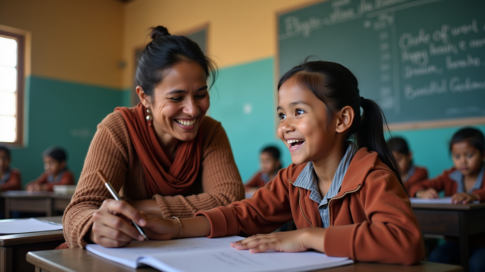

Noticias
Mantente informado sobre los avances, hitos y novedades de nuestras intervenciones educativas en las cinco regiones del Perú.

Los días 13 y 14 de marzo, las acompañantes pedagógicas del programa WAWAKUNAPAC completaron su formación intensiva en el distrito de Ichuña, Moquegua. La capacitación cubrió los fundamentos del enfoque Pikler, las técnicas de observación y acompañamiento, y los protocolos para los talleres con familias.
A partir de la tercera semana de marzo, las acompañantes iniciarán las visitas semanales presenciales a las docentes de educación inicial, marcando el inicio formal de la intervención WAWAKUNAPAC en la región.
Se completó la aplicación de la evaluación de línea de base en las escuelas de tratamiento y control. Los instrumentos estandarizados en Comunicación y Matemática se aplicaron a estudiantes de 3.° a 6.° grado.
Entre el 17 y 19 de febrero se completó la formalización de convenios con las 7 UGEL participantes del programa. Cada convenio incluye cartas de comunicación dirigidas a las instituciones educativas focalizadas.
La plataforma AMELIA completó su fase de desarrollo y pruebas piloto. El asistente de IA vía WhatsApp está listo para acompañar a los docentes STEAM en 9 escuelas de Pasco y Lima Provincias.
REPASO+, AMELIA, WAWAKUNAPAC y CREER: las cuatro intervenciones del Programa HANAQ finalizan su etapa de diseño pedagógico y entran en fase de implementación. Los materiales, módulos y protocolos están listos.
Se completó el proceso de selección y contratación de tutores para la intervención REPASO+ en las cuatro regiones. Los tutores iniciarán su capacitación intensiva en febrero antes de las primeras sesiones con estudiantes.
En coordinación con los Especialistas de Educación Primaria de cada UGEL, se completó la focalización de las 49+ escuelas que participarán en el Programa HANAQ durante 2026, incluyendo las 24 escuelas de control.
El equipo de evaluación e investigación finalizó el diseño del banco de ítems estandarizados en Comunicación y Matemática para los grados 3.° a 6.° de primaria, alineados al CNEB y con estándares comparables a la ENLA.
LIDES y Buenaventura formalizan su alianza para la creación e implementación del Programa HANAQ, un laboratorio de innovación educativa y social para comunidades rurales en las zonas de influencia de la empresa.